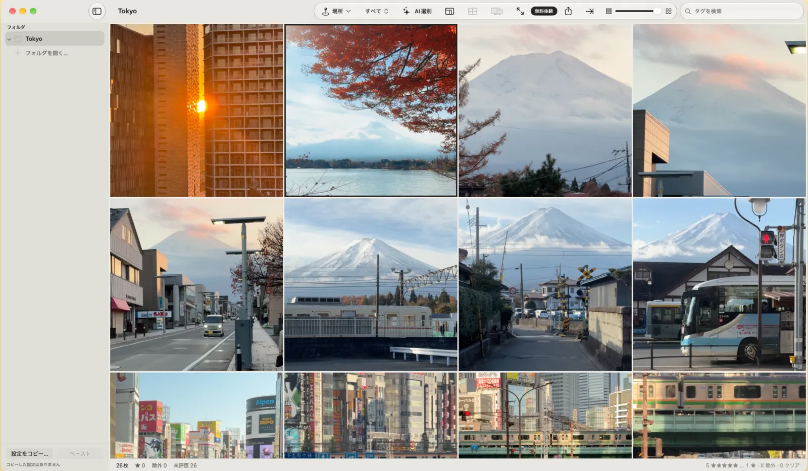

フォルダ単位
Butter Editは今あるフォルダをそのまま使います。コピーも読み込みも不要。フォルダを開けばすぐに始められます。

フォルダをその場で開く
SDカード、外付けSSD、パソコン内のどのフォルダでもそのまま開きます。MacではFinderでの変更もすぐに反映されます。
編集は写真の隣のXMPに
レーティング、除外、カラーラベル、キーワードは、ほかの写真アプリでも読める標準のXMP項目に保存。元の画像には手を加えません。
ドライブを抜き差ししても大丈夫
ドライブを外すとフォルダは「未接続」としてサイドバーに残り、挿し直せばアプリを再起動せずに続けられます。
サムネールはドライブと一緒に
サムネールのキャッシュは写真と同じドライブの隠しフォルダに保存。2回目からは別のパソコンでも一瞬で表示されます。サイズと場所は設定で選べます。
プレビューを先回りして作成
フォルダ全体の画面サイズのプレビューをバックグラウンドで作成。表示中の写真から始め、作業中は一時停止します。
すばやい選別
★1〜5、Xで除外、6〜9でカラーラベル、2〜6枚の並べて比較、スタック、レーティング・ラベル・AIの選択・タグで絞り込み。
フォルダで開く高速RAW現像
無料でダウンロードでき、30日間すべての機能を無料で試せます。macOS 26以降。 Windowsは10(64ビット)以降。